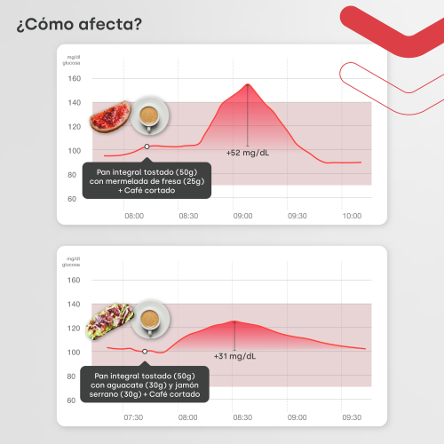

Aprende tu metabolismo
¿Hambre después de comer?
Puede que la culpa sea un pico de glucosa… y su bajón.
Desliza →
Hacemos visible lo invisible
Puede que la culpa sea un pico de glucosa… y su bajón.
Desliza →

Pan integral con mermelada: +52 mg/dl. Con aguacate y jamón: +31 mg/dl. Curvas observadas en registros reales; la respuesta puede variar entre personas.
El mismo alimento puede disparar tu glucosa y no la de tu vecina. Por eso copiar dietas no suele funcionar.
Desliza →
glucovibes.com